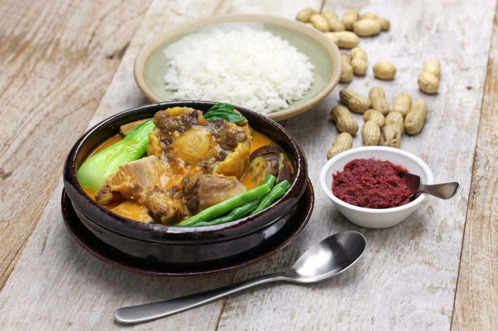

Kare-Kare

What's Kare-Kare?
Kare-Kare is a rich Filipino stew made with a savory peanut sauce. It's
usually made with oxtail, but beef chuck/shank, pork shank/hock (aka Pata
Kare-Kare) are all very popular choices of meat. This meal is usually paired
with white rice and bagoong. (a fermented shrimp paste, which should be fully cooked before serving)
There are three steps to this process: Tenderizing the meat, making the sauce,
and preparing the vegetables. When boiling the meat, be sure to have pour enough water in, so it's fully
tenderized.
Peanut sauce tips: Using peanut butter and crushed peanuts makes a richer flavor,
and soaking annatto seeds in warm water, then using the water gives it that
reddish color for the sauce. (More convenient alternatives are annatto powder/paste) Toasted ground rice is used
to thicken the sauce, but cornstarch/potato starch are good
alternatives.
Finally, just a tip for the
vegetables: Sautee them in garlic before adding to the meat, so their flavor doesn't get lost in the stew.
Ingredients
For the stew
- 3 lbs oxtail (cut in 2 inch slices)
- 1 small banana flower bud (sliced | optional, can find at Asian store)
- 1 bundle bok choy
- 1 bundle string beans (cut into 2 inch slices
- 4 pieces eggplants (sliced)
- 1 cup ground peanuts
- 1/2 cup peanut butter
- 1/2 cup shrimp paste
- 34 oz water (1 liter)
- 1/2 annatto seeds (soak seeds in cup of water)
- 1/2 cup toasted ground rice
- t tbsp garlic (minced)
- 1 onion (chopped)
- salt and pepper
For (Ginisang Bagoong) Shrimp Paste
- 2 cups bagoong alamang, preferably colorless
- 1/4 cup canola oil
- 1/2 cup sugar
- 2 Thai chili peppers (optional)
- 1 tbsp corn starch
- 2 tbsp water
Instructions for Ginisang Bagoong
- Using a fine-mesh sieve, rinse shrimp paste under cold, running water to get rid of excess saltiness. Drain
well!
- In a wide pan on medium, heat oil.
- Add sugar and cook, stirring regularly until sugar is dissolved and has a light brown color.
- Add bagoong & cook, again stirring regularly for about 3-5 mins. (or until color darkens)
- Add minced chili peppers (if using)
- In small bowl, combine corn starch and water & stir until you have a smooth consistency
- Add cornstarch mix to pan and stir until well-distributed. Keep cooking it until paste is slightly thick.
Instructions for Kare-Kare
- In a large pot, bring the water to a boil.
- Put the oxtail in, followed by the onions. Let simmer for 2.5 to 3 hrs or until tender. (35 mins if using
pressure cooker.
- Once the meat is tender, add ground peanuts, peanut butter, and coloring. (water from annatto seed mix)
Simmer for 5-7 mins.
- Add the toasted ground rice and simmer for 5 mins
- On a separate pan, sautee the garlic & add banana flower, eggplant, & string beans. Cook for 5 mins
- Transfer the cooked vegetables to the large pot with the rest of the ingredients.
- Add salt and pepper to taste, then serve hot with shrimp paste. Enjoy!